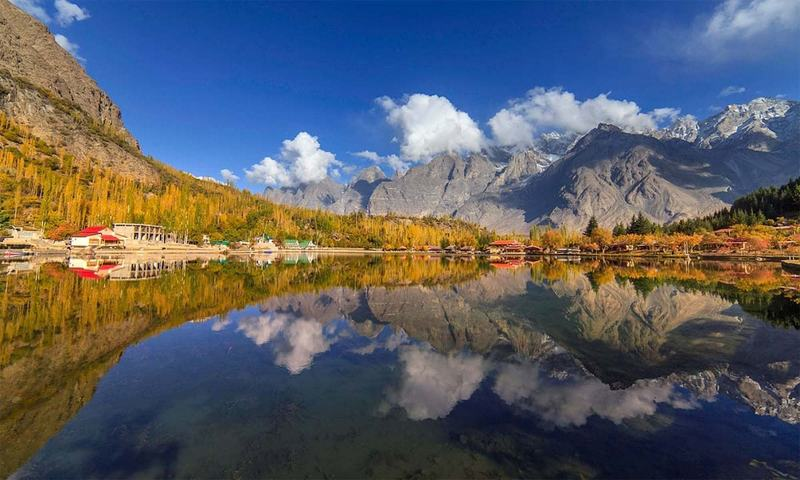
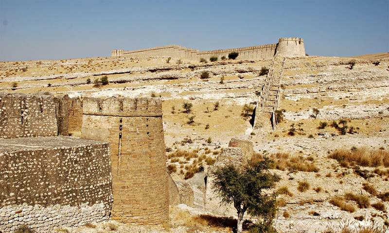

This page is created by A Hai
Pakistan was created, as an Islamic state, out of the partition of the UK’s Indian Empire, at independence in August 1947.
It originally consisted of two parts, West Pakistan (now Pakistan) and East Pakistan (now Bangladesh), separated by 1,600 km of Indian territory.
Partition was followed by war with India over Kashmir and the mass migration of Muslims, Hindus and Sikhs to resettle within the new borders, an upheaval which led to violence, financial loss and death on a large scale.
the arrival of Indian Muslims and departure of Pakistan’s Hindus and Sikhs, Pakistan became an almost entirely Muslim society. Jinnah, who is honoured as the Quaid-i-Azam, or great leader, died in 1948.
English and Urdu are official languages of Pakistan
Mazar-e-Quaid is the tomb of Quaid-e-Azam Muhammad Ali Jinnah who is the founder of Pakistan. He is the father of the nation and deserves a top place for his tomb which he is given rewarded with. The tomb is also the final resting place of Madir-e-Millat (Mother of the Nation), Fatima Jinnah who is the sister of Quaid-Azam. The first prime Minister of Pakistan, Liaquat Ali Khan is also buried here after his assassination in 1951. Fatima Jinnah and Liaquat Ali Khan are buried in the courtyard on the side where as Quaid-e-Azam has his last resting place in the center of the tomb.
Karachi is the most prominent coastal city of Pakistan. The beach lovers here have a lot of opportunities to visit different beaches of the Arabian Sea. Out of all the options, Clifton Beach holds the most critical value among all for giving fun seekers and beach lovers some excellent leisure and recreational opportunities. The Clifton Beach is also alternately known as Sea view which actually is a prominent and the busiest spot of the beach where you will see so many people at any time of the day and night. Some come from beach sports/ activities, some come for cool breeze, some want to have a walk along the coast while some come for so many other recreational activities which include food
Lake Saif ul Malook is a famous tourist resort, well known for the associated story of a Persian prince Saif ul Malook. It is located about 8 kilometers (5 miles) north from the town of Naran in northern end of Kaghan Valley, in District Mansehra, Khyber Pakhtunkhwa. The lake with its majestic and mesmerizing natural beauty, pleasant atmosphere and associated tale and history, attracts thousands of tourists each year from all around the country during the summer.
Saidpur Village situated on the slopes of Margalla Hills in Islamabad is one of the oldest villages of Pakistan. More than five hundred years old Saidpur Village is known for its heritage, history and folklore. These days the village is serving as one of the favorite picnic place in Islamabad for both local and foreign visitors. The village inclining on the slopes of Margalla Hills presents an attractive view in soft light of morning and evening.